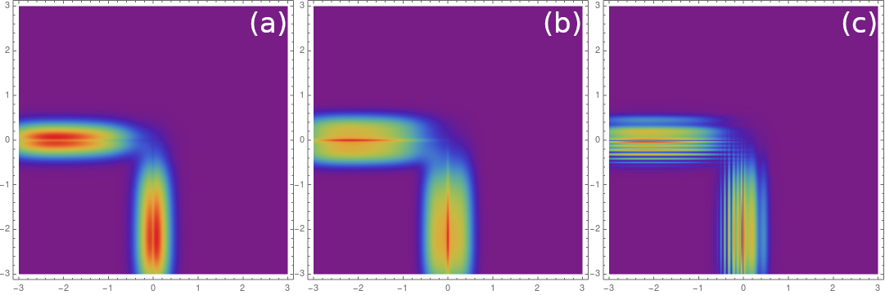

In my research project I was exploring how including the effects of the usually neglected Coulomb binding potential changes the quantum dynamics of certain ionisation phenomena. My work on the project was focused on the computational aspects, co-creating an extensive C++ simulation for high energy light-matter interactions. My full thesis and partial source code is available to view.

A collection of assignments to showcase my use of various techniques in High Performance Computing. Tools used include the use of efficient libraries (NumPy, SciPy), jit compilation to faster C code (Numba), and OpenCL via the PyOpenCL interface. Some techniques of scientific HPC were used to reduce complexity of algorithms and optimise code for target CPU microarchitecture (SIMD).
Traffic simulation project based on Mathematica. Functional programming is used for traffic simulation following a stochastic cellular automaton model. Final report and source code are included in the project.

Designed and built microcontroller circuit for real time sampling and processing hi-res audio data. Using microelectronics and self-written C code running on the Arduino Mega 2560 dev board, the experimental setup was capable of steering an audio beam based on the principle of superposition.
Simple applet using Android's new permission management system to automatically send lecture attendance code, with simple but effective GUI.